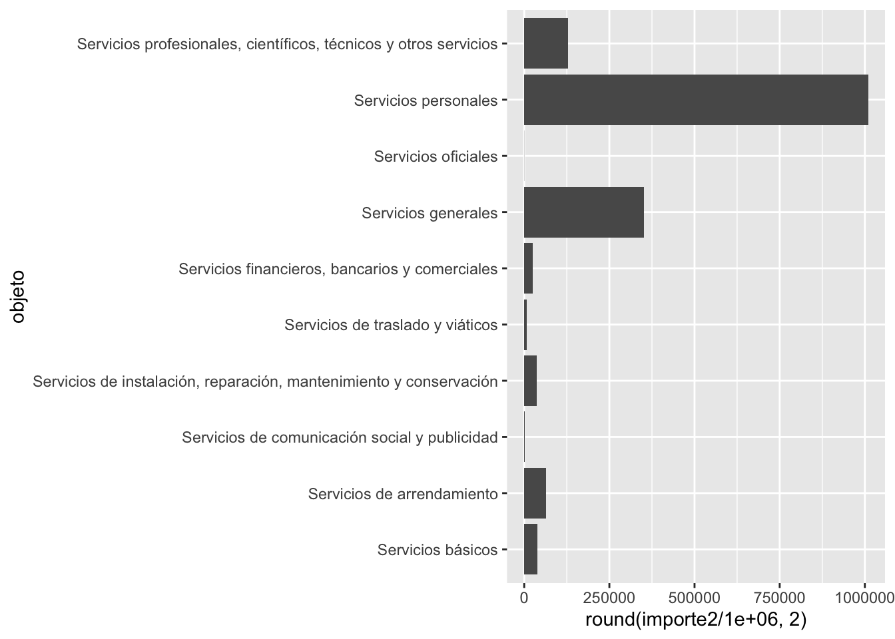

#install.packages("tokenizers", dependencies=T)
# Este paquete no se pudo instalar con pacman::p_load15 Análisis de texto (I)
En esta primera práctica veremos algunas acciones para importación de texto para su análisis, así como el manejo de diferentes fuentes, así como importación de tablas desde pdf.
15.1 Paquetes
NOTA Además de estos paquetes, necesitamos descargar JAVA en nuestro sistema operativo
https://www.java.com/en/download/
Instaleremos algunos paquetes, no todos los usaremos en esta práctica pero para irlos instalando:
Para Windows
# on 64-bit Windows
#remotes::install_github(c("ropensci/tabulizerjars", "ropensci/tabulizer"), INSTALL_opts = "--no-multiarch")Para MAC
#remotes::install_github(c("ropensci/tabulizerjars", "ropensci/tabulizer"))if (!require("pacman")) install.packages("pacman") # instala pacman si se requiereLoading required package: pacmanpacman::p_load(tidyverse, magrittr, tidytext,
tm,
NLP, SnowballC,
wordcloud, ggwordcloud,
quanteda, udpipe,
igraph, ggraph, # para unos gráficos
readxl, janitor, textrank,
broom, epubr, pdftools, tesseract, tokenizers,
rJava, tabulizerjars, tabulizer )15.2 Importar desde un archivo .txt
Vamos a importar el discurso que el presidente dio el 1 de julio: https://lopezobrador.org.mx/2022/07/01/discurso-del-presidente-andres-manuel-lopez-obrador-en-4-ano-del-triunfo-democratico-historico/
amlo <- readLines("datos/text/20220107_amlo.txt")Revisemos un poco este objeto
summary(amlo) Length Class Mode
113 character character Tenemos 113 párrafos. Al momento no tenemos más información que lo revisaremos en siguientes secciones
15.3 Importar un epub
El proyecto Gutenberg tiene una selección de libros publicados sin problemas de derechos de Autor. Trabajaremos con los Cuentos de Amor de Locura y de Muerte de Horacio Quiroga
epubr::epub_head("datos/text/quiroga.epub") # muestra lo primero # A tibble: 9 × 2
section text
<chr> <chr>
1 pg-header "The Project Gutenberg eBook of Cuentos de Amor de "
2 id00249 "#LOS OJOS SOMBRIOS#\n\nDespués de las primeras seman"
3 id00535 "#EL INFIERNO ARTIFICIAL#\n\nLas noches en que hay lu"
4 id00745 "#EL PERRO RABIOSO#\n\nEl 20 de marzo de este año, lo"
5 id01047 "#LOS MENSÚ#\n\nCayetano Maidana y Esteban Podeley, p"
6 id01212 "#LOS PESCADORES DE VIGAS#\n\nEl motivo fué cierto ju"
7 id01445 "#LA MENINGITIS Y SU SOMBRA#\n\nNo vuelvo de mi sorpr"
8 pg-footer "*** END OF THIS PROJECT GUTENBERG EBOOK ***\n "
9 coverpage-wrapper "" Es una selección de cuentos. Revisemos un poco la meta-data:
epubr::epub_meta("datos/text/quiroga.epub") # muestra el meta-data del libro# A tibble: 1 × 8
rights identif…¹ creator title langu…² subject date source
<chr> <chr> <chr> <chr> <chr> <chr> <chr> <chr>
1 Public domain in the USA. http://w… Horaci… Cuen… es Short … 2004… https…
# … with abbreviated variable names ¹identifier, ²languageHoy sí lo vamos a importar en nuestro ambiente:
x <- epubr::epub("datos/text/quiroga.epub") # Importa todo el libro en el objeto x, pero no queremos todo
x# A tibble: 1 × 9
rights ident…¹ creator title langu…² subject date source data
<chr> <chr> <chr> <chr> <chr> <chr> <chr> <chr> <list>
1 Public domain in … http:/… Horaci… Cuen… es Short … 2004… https… <tibble>
# … with abbreviated variable names ¹identifier, ²language¿Dónde están los cuentos?
glimpse(x)Rows: 1
Columns: 9
$ rights <chr> "Public domain in the USA."
$ identifier <chr> "http://www.gutenberg.org/13507"
$ creator <chr> "Horacio Quiroga"
$ title <chr> "Cuentos de Amor de Locura y de Muerte"
$ language <chr> "es"
$ subject <chr> "Short stories, Uruguayan|Uruguayan fiction"
$ date <chr> "2004-09-20|2022-10-06T21:09:10.400769+00:00"
$ source <chr> "https://www.gutenberg.org/files/13507/13507-8.txt"
$ data <list> [<tbl_df[9 x 4]>]Vemos que en realidad la última variable es una lista que adentro trae un objeto “tbl_df” de 9 x 4. Revisemos qué hay
class(x$data)[1] "list"x$data[[1]]
# A tibble: 9 × 4
section text nword nchar
<chr> <chr> <int> <int>
1 pg-header "The Project Gutenberg eBook of Cuentos de Amor… 6435 37893
2 id00249 "#LOS OJOS SOMBRIOS#\n\nDespués de las primeras… 5831 34153
3 id00535 "#EL INFIERNO ARTIFICIAL#\n\nLas noches en que … 7190 42642
4 id00745 "#EL PERRO RABIOSO#\n\nEl 20 de marzo de este a… 9356 55680
5 id01047 "#LOS MENSÚ#\n\nCayetano Maidana y Esteban Pode… 6816 40770
6 id01212 "#LOS PESCADORES DE VIGAS#\n\nEl motivo fué cie… 6325 38243
7 id01445 "#LA MENINGITIS Y SU SOMBRA#\n\nNo vuelvo de mi… 7364 43275
8 pg-footer "*** END OF THIS PROJECT GUTENBERG EBOOK ***\n … 2894 18593
9 coverpage-wrapper "" 0 0Como es una lista, pero una lista de un solo elemento [[1]], vamos a consultarlo:
x$data[[1]]# A tibble: 9 × 4
section text nword nchar
<chr> <chr> <int> <int>
1 pg-header "The Project Gutenberg eBook of Cuentos de Amor… 6435 37893
2 id00249 "#LOS OJOS SOMBRIOS#\n\nDespués de las primeras… 5831 34153
3 id00535 "#EL INFIERNO ARTIFICIAL#\n\nLas noches en que … 7190 42642
4 id00745 "#EL PERRO RABIOSO#\n\nEl 20 de marzo de este a… 9356 55680
5 id01047 "#LOS MENSÚ#\n\nCayetano Maidana y Esteban Pode… 6816 40770
6 id01212 "#LOS PESCADORES DE VIGAS#\n\nEl motivo fué cie… 6325 38243
7 id01445 "#LA MENINGITIS Y SU SOMBRA#\n\nNo vuelvo de mi… 7364 43275
8 pg-footer "*** END OF THIS PROJECT GUTENBERG EBOOK ***\n … 2894 18593
9 coverpage-wrapper "" 0 0Esta es nuestra matriz de datos. Aquí podemos elegir una sección. Por ejemplo un cuento
epub<-x$data[[1]]
class(epub)[1] "tbl_df" "tbl" "data.frame"Vamos a quedarnos con un solo cuento:
ojos_sombrios<-epub %>%
filter(section=="id00249") %>% # nos quedamos con el primer cuento
select(text)
ojos_sombrios# A tibble: 1 × 1
text
<chr>
1 "#LOS OJOS SOMBRIOS#\n\nDespués de las primeras semanas de romper con Elena, …class(ojos_sombrios)[1] "tbl_df" "tbl" "data.frame"Sigue teniendo formato de data.frame. Para poder usar algunos elementos necesitamos convertirlo a texto. Por eso lo vamos a “pegar”
ojos_sombrios<-paste(ojos_sombrios$text) # lo volvemos caracter
class(ojos_sombrios)[1] "character"Con esto ya podremos hacer muchas operaciones de aquí en adelante.
15.4 Importar un pdf con{pdftools}
dof4nov <- pdftools::pdf_text("datos/text/04112022-MAT.pdf")
dof4nov[6] [1] " 6 DIARIO OFICIAL Viernes 4 de noviembre de 2022\n\n Con oficio número SEGOB/CNBP/2354/2022, de fecha 12 de agosto de 2022, “LA CNBP” autorizó la\nprocedencia de la solicitud de acceso al recurso concursable, lo anterior, con fundamento en los artículos 21,\n22, 23 y 24 de los “Lineamientos”, y en términos de la Cláusula Vigésima del Convenio de Coordinación\ny Adhesión.\n Por lo que, resulta necesario utilizar la totalidad de los recursos destinados para el otorgamiento de\nsubsidios a las entidades federativas para realizar acciones de búsqueda en materia de desaparición forzada\nde personas y desaparición cometida por particulares.\n DECLARACIONES\n I. “LA CNBP” declara que:\n I.1. En virtud de que el presente Convenio Modificatorio se deriva del Convenio de Coordinación y\n Adhesión, las Declaraciones manifestadas en dicho instrumento permanecen vigentes, con\n excepción de las expresadas en el presente Convenio Modificatorio, por lo que se tienen por\n reproducidas y ratificadas en su integridad como si a la letra se insertaran en el Convenio de\n Coordinación y Adhesión de referencia.\n I.2. Las documentales, justificativas y comprobatorias que acreditan y sustentan la procedencia de este\n instrumento, obran en el expediente de “LA CNBP”; lo anterior, para todos los fines y efectos\n legales a que haya lugar, por lo que corresponde a dicha área cualquier justificación y sustento sobre\n el particular.\n II. La “ENTIDAD FEDERATIVA” declara que:\n II.1. Es su intención celebrar el presente Convenio Modificatorio al Convenio de Coordinación y Adhesión,\n en términos del presente instrumento jurídico.\n II.2. En virtud de que el presente Convenio Modificatorio se deriva del Convenio de Coordinación y\n Adhesión, las declaraciones manifestadas en dicho instrumento permanecen vigentes con excepción\n de las expresadas en el presente Convenio Modificatorio por lo que se tienen por reproducidas\n y ratificadas en su integridad como si a la letra se insertaran en el Convenio de Coordinación y\n Adhesión de referencia, actualizándose las identificadas con los numerales II.4 y II.5, toda vez que\n hubo sustitución de funcionarios, para quedar como sigue.\n II.4. Samuel Sotelo Salgado, Secretario de Gobierno del Poder Ejecutivo Estatal, acredita\n su personalidad con el nombramiento otorgado a su favor por el Gobernador\n Constitucional del Estado con fecha 03 de mayo de 2022, y tiene facultades para\n suscribir el presente Convenio, de conformidad con los artículos 74 de la Constitución\n Política del Estado Libre y Soberano de Morelos; 3, párrafo tercero, 4, fracción I, 9,\n fracción II, 13, fracción VI, 14 y 22, fracción VII, de la Ley Orgánica de la\n Administración Pública del Estado Libre y Soberano de Morelos, y 8 y 9, fracción VII,\n del Reglamento Interior de la Secretaría de Gobierno.\n II.5. José Gerardo López Huérfano, Encargado de Despacho de la Secretaría de Hacienda\n del Estado, acredita su personalidad con el nombramiento otorgado a su favor por el\n Gobernador del Estado con fecha 03 de mayo de 2022, y tiene facultades para\n suscribir el presente Convenio, de conformidad con los artículos 74 de la Constitución\n Política del Estado Libre y Soberano de Morelos; 3, 4, fracción I, 9, fracción III, 13,\n fracción VI, 14, 15 y 23, fracción IV, de la Ley Orgánica de la Administración Pública\n del Estado Libre y Soberano de Morelos, y 11, 12, fracción XII y 41 del Reglamento\n Interior de la Secretaría de Hacienda.\n III. “LAS PARTES” declaran que:\n III.1. Cuentan con las facultades necesarias para intervenir en la suscripción del presente Convenio\n Modificatorio.\n III.2. Se reconocen mutuamente la personalidad con que se ostentan y manifiestan su conformidad para la\n celebración del presente Convenio Modificatorio.\n III.3. Celebran el presente instrumento, de conformidad con lo establecido en los artículos 21, 22, 23,\n 24 y 25 de los “Lineamientos” y en términos de la Cláusula Vigésima del Convenio de Coordinación\n y Adhesión.\n"class(dof4nov)[1] "character"Para verlo mejor podemos usar el comando cat() de base para cada una de las “hojas”
cat(dof4nov[6]) 6 DIARIO OFICIAL Viernes 4 de noviembre de 2022
Con oficio número SEGOB/CNBP/2354/2022, de fecha 12 de agosto de 2022, “LA CNBP” autorizó la
procedencia de la solicitud de acceso al recurso concursable, lo anterior, con fundamento en los artículos 21,
22, 23 y 24 de los “Lineamientos”, y en términos de la Cláusula Vigésima del Convenio de Coordinación
y Adhesión.
Por lo que, resulta necesario utilizar la totalidad de los recursos destinados para el otorgamiento de
subsidios a las entidades federativas para realizar acciones de búsqueda en materia de desaparición forzada
de personas y desaparición cometida por particulares.
DECLARACIONES
I. “LA CNBP” declara que:
I.1. En virtud de que el presente Convenio Modificatorio se deriva del Convenio de Coordinación y
Adhesión, las Declaraciones manifestadas en dicho instrumento permanecen vigentes, con
excepción de las expresadas en el presente Convenio Modificatorio, por lo que se tienen por
reproducidas y ratificadas en su integridad como si a la letra se insertaran en el Convenio de
Coordinación y Adhesión de referencia.
I.2. Las documentales, justificativas y comprobatorias que acreditan y sustentan la procedencia de este
instrumento, obran en el expediente de “LA CNBP”; lo anterior, para todos los fines y efectos
legales a que haya lugar, por lo que corresponde a dicha área cualquier justificación y sustento sobre
el particular.
II. La “ENTIDAD FEDERATIVA” declara que:
II.1. Es su intención celebrar el presente Convenio Modificatorio al Convenio de Coordinación y Adhesión,
en términos del presente instrumento jurídico.
II.2. En virtud de que el presente Convenio Modificatorio se deriva del Convenio de Coordinación y
Adhesión, las declaraciones manifestadas en dicho instrumento permanecen vigentes con excepción
de las expresadas en el presente Convenio Modificatorio por lo que se tienen por reproducidas
y ratificadas en su integridad como si a la letra se insertaran en el Convenio de Coordinación y
Adhesión de referencia, actualizándose las identificadas con los numerales II.4 y II.5, toda vez que
hubo sustitución de funcionarios, para quedar como sigue.
II.4. Samuel Sotelo Salgado, Secretario de Gobierno del Poder Ejecutivo Estatal, acredita
su personalidad con el nombramiento otorgado a su favor por el Gobernador
Constitucional del Estado con fecha 03 de mayo de 2022, y tiene facultades para
suscribir el presente Convenio, de conformidad con los artículos 74 de la Constitución
Política del Estado Libre y Soberano de Morelos; 3, párrafo tercero, 4, fracción I, 9,
fracción II, 13, fracción VI, 14 y 22, fracción VII, de la Ley Orgánica de la
Administración Pública del Estado Libre y Soberano de Morelos, y 8 y 9, fracción VII,
del Reglamento Interior de la Secretaría de Gobierno.
II.5. José Gerardo López Huérfano, Encargado de Despacho de la Secretaría de Hacienda
del Estado, acredita su personalidad con el nombramiento otorgado a su favor por el
Gobernador del Estado con fecha 03 de mayo de 2022, y tiene facultades para
suscribir el presente Convenio, de conformidad con los artículos 74 de la Constitución
Política del Estado Libre y Soberano de Morelos; 3, 4, fracción I, 9, fracción III, 13,
fracción VI, 14, 15 y 23, fracción IV, de la Ley Orgánica de la Administración Pública
del Estado Libre y Soberano de Morelos, y 11, 12, fracción XII y 41 del Reglamento
Interior de la Secretaría de Hacienda.
III. “LAS PARTES” declaran que:
III.1. Cuentan con las facultades necesarias para intervenir en la suscripción del presente Convenio
Modificatorio.
III.2. Se reconocen mutuamente la personalidad con que se ostentan y manifiestan su conformidad para la
celebración del presente Convenio Modificatorio.
III.3. Celebran el presente instrumento, de conformidad con lo establecido en los artículos 21, 22, 23,
24 y 25 de los “Lineamientos” y en términos de la Cláusula Vigésima del Convenio de Coordinación
y Adhesión.Qué pasa cuando nuestro pdf tiene datos como tablas, ¿no sería genial?
15.5 Extrayendo tablas de un pdf conn {tabulizer}
Tenemos un pequeño extracto del PEF
PEF <- pdftools::pdf_data("datos/text/tomo_1_fa.pdf")[[3]]Este funciona cuando tenemos “tablas limpias”
tab1 <- tabulizer::extract_tables("datos/text/tomo_1_fa.pdf", pages = 3)
tab2 <- tabulizer::extract_tables("datos/text/tomo_1_fa.pdf", pages = 4)tabla1<-as_tibble(tab1[[1]])Warning: The `x` argument of `as_tibble.matrix()` must have unique column names if
`.name_repair` is omitted as of tibble 2.0.0.
ℹ Using compatibility `.name_repair`.tabla2<-as_tibble(tab2[[1]])Vamos a juntar estas tablas:
pef2022<-as_tibble(rbind(tabla1[-1,],
tabla2[-1,])) #no queremos las primeras filasVamos a limpiar estos datos:
names(pef2022)<-c("objeto", "importe")Hoy veamos que nuestro importe está
class(pef2022$importe)[1] "character"Un problema es para convertirlo al número como tiene comas si hacemos un “as.numeric” lo hará NA
pef2022 %<>%
mutate(importe2=as.numeric(importe))Warning in mask$eval_all_mutate(quo): NAs introducidos por coerción¿Qué hacer?
Primero vamos a eliminar todas las comas de nuestra columna.. introduciremos un poco el paquete {stringr}
pef2022 %<>%
mutate(importe2=stringr::str_remove_all(importe,pattern=",")) %>%
mutate(importe2=as.numeric(importe2))Supongamos que queremos graficar los objetos que tengan que ver con “servicios”
pef2022 %>%
filter(stringr::str_detect(objeto, # variable de caracter
pattern="Servicios")) %>% # patrón que buscamos que tenga
ggplot()+
aes(x=objeto, y=round(importe2/1000000,2)) +
geom_bar(stat="identity") + coord_flip()
15.6 Importar una imagen con texto con {tesseract}
El paquete {tesseract} …
“utiliza datos de entrenamiento para realizar OCR. La mayoría de los sistemas utilizan de forma predeterminada los datos de entrenamiento en inglés”. Para mejorar el rendimiento de OCR para otros idiomas, puede instalar los datos de entrenamiento de su distribución… En Windows y MacOS, puede instalar idiomas mediante la función tesseract_download, que descarga datos de entrenamiento directamente desde github y los almacena en la ruta del disco…” (traducido de la viñeta)
if(is.na(match("spa", tesseract::tesseract_info()$available)))
tesseract::tesseract_download("spa") # baja el entrenamiento para español
spa <- tesseract::tesseract("spa") # aquí este será el "engine"
text <- tesseract::ocr("datos/text/texto1.png", #ruta donde está la imagen
engine = spa) # que lo lea en español
cat(text)NOTA
Las denominaciones empleadas en esta publicación y la forma en que aparecen
presentados los datos que contiene no implican, de parte de la Secretaría de las
Naciones Unidas, juicio alguno sobre la condición jurídica de ninguno de los países o
territorios citados o de sus autoridades, ni respecto de la delimitación de sus fronte-
ras O límites.
En algunos cuadros, las designaciones economías “desarrolladas” y “en
desarrollo”? se emplean por razones estadísticas y no expresan necesariamente juicio
alguno sobre la etapa alcanzada por un determinado país o zona en el proceso de
desarrollo,
El término “país” usado en el texto de esta publicación también se refiere, cuan-
do proceda, a territorios o áreas.
Los puntos de vista que se exponen en esta publicación son los de sus respectivos
autores y no entrañan la manifestación de opinión alguna por parte de la Secretaría
de las Naciones Unidas.
Esta publicación ha sido preparada y refundida con arreglo a la práctica y
requerimientos de las Naciones Unidas.
Las signaturas de los documentos de las Naciones Unidas se componen de letras
mayúsculas y cifras. La mención de una de tales signaturas indica que se hace
referencia a un documento de las Naciones Unidas.15.7 {stringr} Limpieza de variables de cadena
stringr::str_squish(text)[1] "NOTA Las denominaciones empleadas en esta publicación y la forma en que aparecen presentados los datos que contiene no implican, de parte de la Secretaría de las Naciones Unidas, juicio alguno sobre la condición jurídica de ninguno de los países o territorios citados o de sus autoridades, ni respecto de la delimitación de sus fronte- ras O límites. En algunos cuadros, las designaciones economías “desarrolladas” y “en desarrollo”? se emplean por razones estadísticas y no expresan necesariamente juicio alguno sobre la etapa alcanzada por un determinado país o zona en el proceso de desarrollo, El término “país” usado en el texto de esta publicación también se refiere, cuan- do proceda, a territorios o áreas. Los puntos de vista que se exponen en esta publicación son los de sus respectivos autores y no entrañan la manifestación de opinión alguna por parte de la Secretaría de las Naciones Unidas. Esta publicación ha sido preparada y refundida con arreglo a la práctica y requerimientos de las Naciones Unidas. Las signaturas de los documentos de las Naciones Unidas se componen de letras mayúsculas y cifras. La mención de una de tales signaturas indica que se hace referencia a un documento de las Naciones Unidas."nota<-stringr::str_split_fixed(text, "\n\n", n=10) ## por párrafos
nota [,1]
[1,] "NOTA"
[,2]
[1,] "Las denominaciones empleadas en esta publicación y la forma en que aparecen\npresentados los datos que contiene no implican, de parte de la Secretaría de las\nNaciones Unidas, juicio alguno sobre la condición jurídica de ninguno de los países o\nterritorios citados o de sus autoridades, ni respecto de la delimitación de sus fronte-\nras O límites."
[,3]
[1,] "En algunos cuadros, las designaciones economías “desarrolladas” y “en\ndesarrollo”? se emplean por razones estadísticas y no expresan necesariamente juicio\nalguno sobre la etapa alcanzada por un determinado país o zona en el proceso de\ndesarrollo,"
[,4]
[1,] "El término “país” usado en el texto de esta publicación también se refiere, cuan-\ndo proceda, a territorios o áreas."
[,5]
[1,] "Los puntos de vista que se exponen en esta publicación son los de sus respectivos\nautores y no entrañan la manifestación de opinión alguna por parte de la Secretaría\nde las Naciones Unidas."
[,6]
[1,] "Esta publicación ha sido preparada y refundida con arreglo a la práctica y\nrequerimientos de las Naciones Unidas."
[,7]
[1,] "Las signaturas de los documentos de las Naciones Unidas se componen de letras\nmayúsculas y cifras. La mención de una de tales signaturas indica que se hace\nreferencia a un documento de las Naciones Unidas.\n"
[,8] [,9] [,10]
[1,] "" "" "" stringr::str_count(text, "\n\n")[1] 6nota<-stringr::str_split_fixed(text,
pattern="\n\n",
n=str_count(text, "\n\n")+1) ## por párrafos
nota [,1]
[1,] "NOTA"
[,2]
[1,] "Las denominaciones empleadas en esta publicación y la forma en que aparecen\npresentados los datos que contiene no implican, de parte de la Secretaría de las\nNaciones Unidas, juicio alguno sobre la condición jurídica de ninguno de los países o\nterritorios citados o de sus autoridades, ni respecto de la delimitación de sus fronte-\nras O límites."
[,3]
[1,] "En algunos cuadros, las designaciones economías “desarrolladas” y “en\ndesarrollo”? se emplean por razones estadísticas y no expresan necesariamente juicio\nalguno sobre la etapa alcanzada por un determinado país o zona en el proceso de\ndesarrollo,"
[,4]
[1,] "El término “país” usado en el texto de esta publicación también se refiere, cuan-\ndo proceda, a territorios o áreas."
[,5]
[1,] "Los puntos de vista que se exponen en esta publicación son los de sus respectivos\nautores y no entrañan la manifestación de opinión alguna por parte de la Secretaría\nde las Naciones Unidas."
[,6]
[1,] "Esta publicación ha sido preparada y refundida con arreglo a la práctica y\nrequerimientos de las Naciones Unidas."
[,7]
[1,] "Las signaturas de los documentos de las Naciones Unidas se componen de letras\nmayúsculas y cifras. La mención de una de tales signaturas indica que se hace\nreferencia a un documento de las Naciones Unidas.\n"stringr::str_squish(nota)[1] "NOTA"
[2] "Las denominaciones empleadas en esta publicación y la forma en que aparecen presentados los datos que contiene no implican, de parte de la Secretaría de las Naciones Unidas, juicio alguno sobre la condición jurídica de ninguno de los países o territorios citados o de sus autoridades, ni respecto de la delimitación de sus fronte- ras O límites."
[3] "En algunos cuadros, las designaciones economías “desarrolladas” y “en desarrollo”? se emplean por razones estadísticas y no expresan necesariamente juicio alguno sobre la etapa alcanzada por un determinado país o zona en el proceso de desarrollo,"
[4] "El término “país” usado en el texto de esta publicación también se refiere, cuan- do proceda, a territorios o áreas."
[5] "Los puntos de vista que se exponen en esta publicación son los de sus respectivos autores y no entrañan la manifestación de opinión alguna por parte de la Secretaría de las Naciones Unidas."
[6] "Esta publicación ha sido preparada y refundida con arreglo a la práctica y requerimientos de las Naciones Unidas."
[7] "Las signaturas de los documentos de las Naciones Unidas se componen de letras mayúsculas y cifras. La mención de una de tales signaturas indica que se hace referencia a un documento de las Naciones Unidas." Si queremos quitar lo “-”, lo podemos hacer:
nota<-stringr::str_squish(nota)
stringr::str_remove_all(nota,
pattern="- ")[1] "NOTA"
[2] "Las denominaciones empleadas en esta publicación y la forma en que aparecen presentados los datos que contiene no implican, de parte de la Secretaría de las Naciones Unidas, juicio alguno sobre la condición jurídica de ninguno de los países o territorios citados o de sus autoridades, ni respecto de la delimitación de sus fronteras O límites."
[3] "En algunos cuadros, las designaciones economías “desarrolladas” y “en desarrollo”? se emplean por razones estadísticas y no expresan necesariamente juicio alguno sobre la etapa alcanzada por un determinado país o zona en el proceso de desarrollo,"
[4] "El término “país” usado en el texto de esta publicación también se refiere, cuando proceda, a territorios o áreas."
[5] "Los puntos de vista que se exponen en esta publicación son los de sus respectivos autores y no entrañan la manifestación de opinión alguna por parte de la Secretaría de las Naciones Unidas."
[6] "Esta publicación ha sido preparada y refundida con arreglo a la práctica y requerimientos de las Naciones Unidas."
[7] "Las signaturas de los documentos de las Naciones Unidas se componen de letras mayúsculas y cifras. La mención de una de tales signaturas indica que se hace referencia a un documento de las Naciones Unidas." 15.8 Más operaciones con cadenas con {stringr} y {tokenizers}
Ya vimos el conteo de algunos patrones y cómo podemos quitar algunos. Trabajemos con el cuento de Quiroga, que también está un poco sucio, y veamos como podemos seguir utilizando el formato tidy
ojos_sombrios<-ojos_sombrios %>%
stringr::str_split_fixed( pattern="\n\n", n=str_count(text, "\n\n")+1) %>% ## por párrafos %
stringr::str_squish()Hay un personaje que se llama Nébel, veámos cuantas veces aparece:
summary(ojos_sombrios) Length Class Mode
7 character character ojos_sombrios %>%
stringr::str_count(pattern="Vezzera") %>%
sum()[1] 21Vamos a ver cuántas palabras tiene cada párrafos, hay unos párrafos vacíos:
tokenizers::count_words(ojos_sombrios)[1] 3 62 69 135 46 12 5635Revisemos el discurso de Amlo:
tokenizers::count_words(amlo) [1] 3 0 2 0 4 0 5 0 2 0 3 0 0 24 0 124 0 0
[19] 514 0 0 0 0 0 57 0 113 0 33 0 150 0 27 0 0 0
[37] 0 0 0 0 94 0 171 0 28 0 139 0 0 0 0 0 0 0
[55] 293 0 25 0 81 0 133 0 0 0 0 0 0 0 180 0 123 0
[73] 141 0 145 0 0 0 0 0 0 0 99 0 56 0 116 0 114 0
[91] 87 0 0 0 214 0 208 0 58 0 89 0 85 0 0 0 3 0
[109] 40 0 174 0 99De los 113 párrafos tenemos varios que están en 0. Vamos a eliminarlos. Vemos que txt reconoció los párrafos sin problemas, sin necesidad de poner la marca de párrafo
count<-tokenizers::count_words(amlo)
count==0 [1] FALSE TRUE FALSE TRUE FALSE TRUE FALSE TRUE FALSE TRUE FALSE TRUE
[13] TRUE FALSE TRUE FALSE TRUE TRUE FALSE TRUE TRUE TRUE TRUE TRUE
[25] FALSE TRUE FALSE TRUE FALSE TRUE FALSE TRUE FALSE TRUE TRUE TRUE
[37] TRUE TRUE TRUE TRUE FALSE TRUE FALSE TRUE FALSE TRUE FALSE TRUE
[49] TRUE TRUE TRUE TRUE TRUE TRUE FALSE TRUE FALSE TRUE FALSE TRUE
[61] FALSE TRUE TRUE TRUE TRUE TRUE TRUE TRUE FALSE TRUE FALSE TRUE
[73] FALSE TRUE FALSE TRUE TRUE TRUE TRUE TRUE TRUE TRUE FALSE TRUE
[85] FALSE TRUE FALSE TRUE FALSE TRUE FALSE TRUE TRUE TRUE FALSE TRUE
[97] FALSE TRUE FALSE TRUE FALSE TRUE FALSE TRUE TRUE TRUE FALSE TRUE
[109] FALSE TRUE FALSE TRUE FALSEamlo<-amlo[!count==0] Vamos a jugar más con algunas opciones de {tokenizers}
tokenizers::count_words(amlo) [1] 3 2 4 5 2 3 24 124 514 57 113 33 150 27 94 171 28 139 293
[20] 25 81 133 180 123 141 145 99 56 116 114 87 214 208 58 89 85 3 40
[39] 174 99tokenizers::count_sentences(amlo) [1] 1 1 1 1 1 1 1 4 12 3 4 2 2 1 1 6 1 2 8 1 1 3 4 5 1
[26] 4 1 1 3 1 1 2 3 1 5 1 1 2 6 215.9 Tokenización para análisis de texto
Las palabras tienen un papel en el lenguaje, por lo cual muchas veces la unidad que usaremos será esa. Uno de los primeros pasos para el análisis de texto será descomponer nuestros textos en palabras.
15.9.1 Tokenización con {tidytext}
Para usar {tidytext}, necesitamos que nuestro texto esté en formato tibble:
amlo_df <-tibble(text=amlo)A partir de esto podemos pasar al proceso de tokenización:
amlo_df %>%
unnest_tokens(word, text)# A tibble: 4,056 × 1
word
<chr>
1 amigas
2 y
3 amigos
4 invitados
5 especiales
6 presidentes
7 municipales
8 presidentas
9 municipales
10 gobernadores
# … with 4,046 more rowsPodemos hacer un tabulado de estos elementos:
amlo_df %>%
tidytext::unnest_tokens(word, text) %>%
tabyl(word) %>%
arrange(-n) %>%
head(10) word n percent
de 260 0.06410256
la 179 0.04413215
y 145 0.03574951
en 134 0.03303748
el 124 0.03057199
que 120 0.02958580
a 84 0.02071006
se 83 0.02046351
los 59 0.01454635
es 53 0.01306706Importa el tipo de palabra!!! En muchos idiomas las preposiciones y determinantes son bastante comunes. Hay varios diccionarios, incluso los podemos modificar. Para este ejercicio utilizaremos las palabras comunes del paquete {quanteda}
quanteda::stopwords(language="spa") [1] "de" "la" "que" "el" "en"
[6] "y" "a" "los" "del" "se"
[11] "las" "por" "un" "para" "con"
[16] "no" "una" "su" "al" "lo"
[21] "como" "más" "pero" "sus" "le"
[26] "ya" "o" "este" "sí" "porque"
[31] "esta" "entre" "cuando" "muy" "sin"
[36] "sobre" "también" "me" "hasta" "hay"
[41] "donde" "quien" "desde" "todo" "nos"
[46] "durante" "todos" "uno" "les" "ni"
[51] "contra" "otros" "ese" "eso" "ante"
[56] "ellos" "e" "esto" "mí" "antes"
[61] "algunos" "qué" "unos" "yo" "otro"
[66] "otras" "otra" "él" "tanto" "esa"
[71] "estos" "mucho" "quienes" "nada" "muchos"
[76] "cual" "poco" "ella" "estar" "estas"
[81] "algunas" "algo" "nosotros" "mi" "mis"
[86] "tú" "te" "ti" "tu" "tus"
[91] "ellas" "nosotras" "vosotros" "vosotras" "os"
[96] "mío" "mía" "míos" "mías" "tuyo"
[101] "tuya" "tuyos" "tuyas" "suyo" "suya"
[106] "suyos" "suyas" "nuestro" "nuestra" "nuestros"
[111] "nuestras" "vuestro" "vuestra" "vuestros" "vuestras"
[116] "esos" "esas" "estoy" "estás" "está"
[121] "estamos" "estáis" "están" "esté" "estés"
[126] "estemos" "estéis" "estén" "estaré" "estarás"
[131] "estará" "estaremos" "estaréis" "estarán" "estaría"
[136] "estarías" "estaríamos" "estaríais" "estarían" "estaba"
[141] "estabas" "estábamos" "estabais" "estaban" "estuve"
[146] "estuviste" "estuvo" "estuvimos" "estuvisteis" "estuvieron"
[151] "estuviera" "estuvieras" "estuviéramos" "estuvierais" "estuvieran"
[156] "estuviese" "estuvieses" "estuviésemos" "estuvieseis" "estuviesen"
[161] "estando" "estado" "estada" "estados" "estadas"
[166] "estad" "he" "has" "ha" "hemos"
[171] "habéis" "han" "haya" "hayas" "hayamos"
[176] "hayáis" "hayan" "habré" "habrás" "habrá"
[181] "habremos" "habréis" "habrán" "habría" "habrías"
[186] "habríamos" "habríais" "habrían" "había" "habías"
[191] "habíamos" "habíais" "habían" "hube" "hubiste"
[196] "hubo" "hubimos" "hubisteis" "hubieron" "hubiera"
[201] "hubieras" "hubiéramos" "hubierais" "hubieran" "hubiese"
[206] "hubieses" "hubiésemos" "hubieseis" "hubiesen" "habiendo"
[211] "habido" "habida" "habidos" "habidas" "soy"
[216] "eres" "es" "somos" "sois" "son"
[221] "sea" "seas" "seamos" "seáis" "sean"
[226] "seré" "serás" "será" "seremos" "seréis"
[231] "serán" "sería" "serías" "seríamos" "seríais"
[236] "serían" "era" "eras" "éramos" "erais"
[241] "eran" "fui" "fuiste" "fue" "fuimos"
[246] "fuisteis" "fueron" "fuera" "fueras" "fuéramos"
[251] "fuerais" "fueran" "fuese" "fueses" "fuésemos"
[256] "fueseis" "fuesen" "siendo" "sido" "tengo"
[261] "tienes" "tiene" "tenemos" "tenéis" "tienen"
[266] "tenga" "tengas" "tengamos" "tengáis" "tengan"
[271] "tendré" "tendrás" "tendrá" "tendremos" "tendréis"
[276] "tendrán" "tendría" "tendrías" "tendríamos" "tendríais"
[281] "tendrían" "tenía" "tenías" "teníamos" "teníais"
[286] "tenían" "tuve" "tuviste" "tuvo" "tuvimos"
[291] "tuvisteis" "tuvieron" "tuviera" "tuvieras" "tuviéramos"
[296] "tuvierais" "tuvieran" "tuviese" "tuvieses" "tuviésemos"
[301] "tuvieseis" "tuviesen" "teniendo" "tenido" "tenida"
[306] "tenidos" "tenidas" "tened" stop<-quanteda::stopwords(language="spa")amlo_df %>%
tidytext::unnest_tokens(word, text) %>%
filter(!word%in%stop) %>% # ojo con el filtro
tabyl(word) %>%
arrange(-n) %>%
head(10) word n percent
mil 29 0.014521783
millones 16 0.008012018
ciento 15 0.007511267
inversión 13 0.006509765
aquí 12 0.006009014
méxico 12 0.006009014
país 12 0.006009014
trabajadores 12 0.006009014
gobierno 11 0.005508262
construcción 10 0.00500751115.9.2 Tokenización con {udpipe}
Para mayor información consultar https://ufal.mff.cuni.cz/~straka/papers/2017-conll_udpipe.pdf
Primero vamos a bajar nuestro modelo en español
udmodel <- udpipe_download_model(language = "spanish") # esto trabaja con la estructura del españolDownloading udpipe model from https://raw.githubusercontent.com/jwijffels/udpipe.models.ud.2.5/master/inst/udpipe-ud-2.5-191206/spanish-gsd-ud-2.5-191206.udpipe to /Users/anaescoto/Dropbox/2022/Curso_r_cnvl/coneval/spanish-gsd-ud-2.5-191206.udpipe - This model has been trained on version 2.5 of data from https://universaldependencies.org - The model is distributed under the CC-BY-SA-NC license: https://creativecommons.org/licenses/by-nc-sa/4.0 - Visit https://github.com/jwijffels/udpipe.models.ud.2.5 for model license details. - For a list of all models and their licenses (most models you can download with this package have either a CC-BY-SA or a CC-BY-SA-NC license) read the documentation at ?udpipe_download_model. For building your own models: visit the documentation by typing vignette('udpipe-train', package = 'udpipe')Downloading finished, model stored at '/Users/anaescoto/Dropbox/2022/Curso_r_cnvl/coneval/spanish-gsd-ud-2.5-191206.udpipe'Vamos a “tokenizar” el discurso de AMLO:
amlo_udpipe<-udpipe(x =amlo,
object=udmodel) #"tokeniza" el textoAdemás de separarnos las palabras, también distingue puntuación (por eso tiene más líneas que las palabras), pero también nos da las “Universal POS tags”, donde POS=part-of-speech, que están en la variable “upos”
amlo_udpipe %>%
head(10) doc_id paragraph_id sentence_id
1 doc1 1 1
2 doc1 1 1
3 doc1 1 1
4 doc1 1 1
5 doc2 1 1
6 doc2 1 1
7 doc2 1 1
8 doc3 1 1
9 doc3 1 1
10 doc3 1 1
sentence start end term_id token_id
1 Amigas y amigos, 1 6 1 1
2 Amigas y amigos, 8 8 2 2
3 Amigas y amigos, 10 15 3 3
4 Amigas y amigos, 16 16 4 4
5 Invitados especiales, 1 9 1 1
6 Invitados especiales, 11 20 2 2
7 Invitados especiales, 21 21 3 3
8 Presidentes municipales, presidentas municipales, 1 11 1 1
9 Presidentes municipales, presidentas municipales, 13 23 2 2
10 Presidentes municipales, presidentas municipales, 24 24 3 3
token lemma upos xpos feats head_token_id
1 Amigas amiga NOUN <NA> Gender=Fem|Number=Plur 0
2 y y CCONJ <NA> <NA> 3
3 amigos amigo NOUN <NA> Gender=Masc|Number=Plur 1
4 , , PUNCT <NA> <NA> 1
5 Invitados invitado NOUN <NA> Gender=Masc|Number=Plur 0
6 especiales especial ADJ <NA> Number=Plur 1
7 , , PUNCT <NA> <NA> 1
8 Presidentes presidente NOUN <NA> Gender=Masc|Number=Plur 0
9 municipales municipal ADJ <NA> Number=Plur 1
10 , , PUNCT <NA> <NA> 4
dep_rel deps misc
1 root <NA> <NA>
2 cc <NA> <NA>
3 conj <NA> SpaceAfter=No
4 punct <NA> SpacesAfter=\\n
5 root <NA> <NA>
6 amod <NA> SpaceAfter=No
7 punct <NA> SpacesAfter=\\n
8 root <NA> <NA>
9 amod <NA> SpaceAfter=No
10 punct <NA> <NA>¿Con cuales UPOS se trabaja? https://universaldependencies.org/u/pos/
amlo_udpipe %>%
tabyl(upos) upos n percent valid_percent
ADJ 280 0.0602668963 0.0610953524
ADP 715 0.1538958244 0.1560113463
ADV 189 0.0406801550 0.0412393629
AUX 179 0.0385277658 0.0390573860
CCONJ 194 0.0417563495 0.0423303513
DET 607 0.1306500215 0.1324459961
INTJ 1 0.0002152389 0.0002181977
NOUN 889 0.1913473956 0.1939777438
NUM 126 0.0271201033 0.0274929086
PRON 207 0.0445544554 0.0451669212
PROPN 166 0.0357296599 0.0362208161
PUNCT 466 0.1003013345 0.1016801222
SCONJ 137 0.0294877314 0.0298930831
SYM 1 0.0002152389 0.0002181977
VERB 426 0.0916917779 0.0929522147
<NA> 63 0.0135600517 NA¿Qué no logró identificar?
amlo_udpipe %>%
filter(is.na(upos)) %>%
tabyl(token) token n percent
Al 1 0.01587302
agregarse 2 0.03174603
al 21 0.33333333
darle 1 0.01587302
dedicarse 1 0.01587302
del 35 0.55555556
haciéndole 1 0.01587302
venderlos 1 0.01587302La clasificación de las UPOS nos permite hacer filtro por el tipo de palabra que queremos analizar, seguro los sustantivos son los que más queremos revisar:
amlo_udpipe %>%
filter(upos=="NOUN") %>%
tabyl(token) %>%
arrange(-n) %>%
head(10) token n percent
millones 16 0.017997750
inversión 13 0.014623172
país 12 0.013498313
trabajadores 12 0.013498313
construcción 10 0.011248594
gobierno 10 0.011248594
refinería 9 0.010123735
tiempo 9 0.010123735
trabajo 9 0.010123735
política 8 0.008998875Además de los “tokens” podemos pedirles los “lemma”, que como vemos quita el género y el número
amlo_udpipe %>%
filter(upos=="NOUN") %>%
tabyl(lemma) %>%
arrange(-n) %>%
head(10) lemma n percent
millón 19 0.02137233
país 16 0.01799775
inversión 13 0.01462317
refinería 13 0.01462317
empresa 12 0.01349831
gobierno 12 0.01349831
obra 12 0.01349831
tiempo 12 0.01349831
trabajador 12 0.01349831
año 11 0.01237345